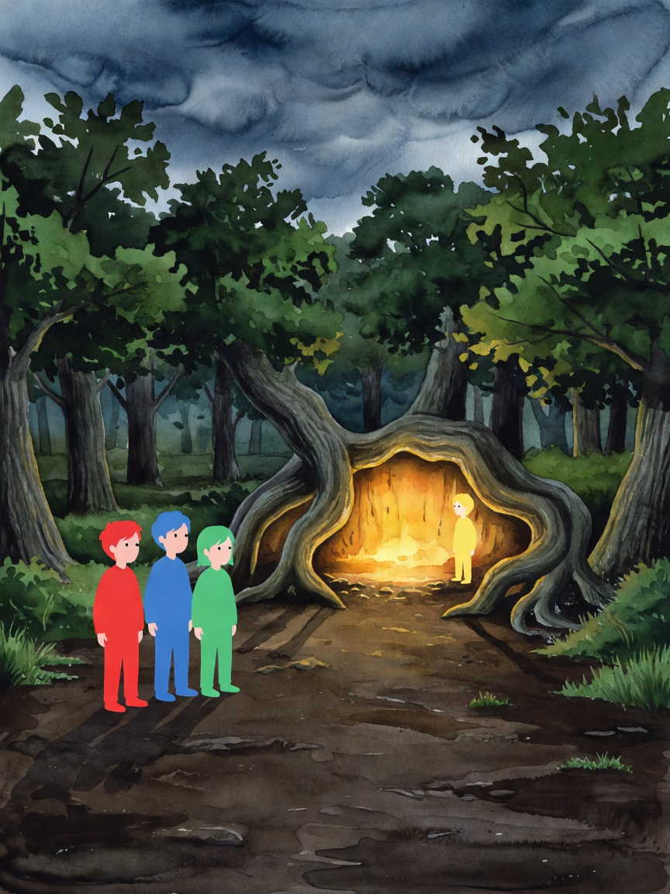
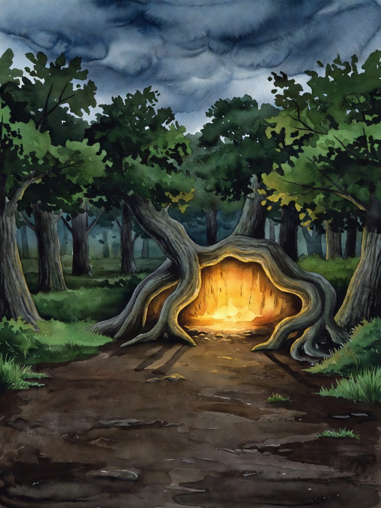
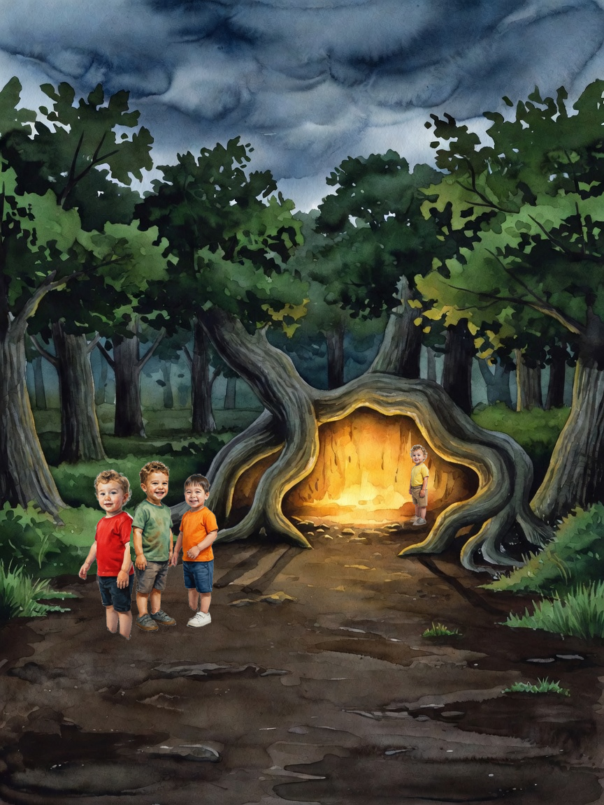

Composite rerun — production experiment 64
The five production pages whose outline declared a foreground and a background character. Each was re-run through the real composite stage to answer: what would the page have looked like?
4 of 5 aborted by design. 1 produced a page. The composite was never silently broken — it runs, inspects the plate, and refuses when the premise does not hold. The abort reason was being thrown away before save, which is why the database looked as if nothing ever happened.
The four aborts
| page | gate | reason |
|---|---|---|
| …r9llf5yi9 p1 | depth-spread | [SCENE COMPOSITE] no depth spread on the plate — tallest/shortest figure is 1.56x (needs 2x). Every character is at the same distance, so the declared foreground/background split is not real and there is nothing for the composite to correct — the page keeps its original render |
| …r9llf5yi9 p10 | cast-empty | composite cast is empty — page has no scene characters, or no story avatar sheets |
| …r9llf5yi9 p14 | cast-empty | composite cast is empty — page has no scene characters, or no story avatar sheets |
| …zb960muni p1 | depth-spread | [SCENE COMPOSITE] no depth spread on the plate — tallest/shortest figure is 1.51x (needs 2x). Every character is at the same distance, so the declared foreground/background split is not real and there is nothing for the composite to correct — the page keeps its original render |
The one that ran — Das Ei im Wurzelnest, page 17
Cast: Levin (foreground), Max (foreground), Kiaan (foreground), Julian (background) · detector dino · 4 figures placed · $0.06


| Levin | age 5 | as-painted | head 40px | target 248px | — |
| Max | age 3 | as-painted | head 38px | target 246px | — |
| Kiaan | age 3 | as-painted | head 38px | target 222px | — |
| Julian | age 3 | as-painted | head 23px | target 118px | — |
Every intermediate step


